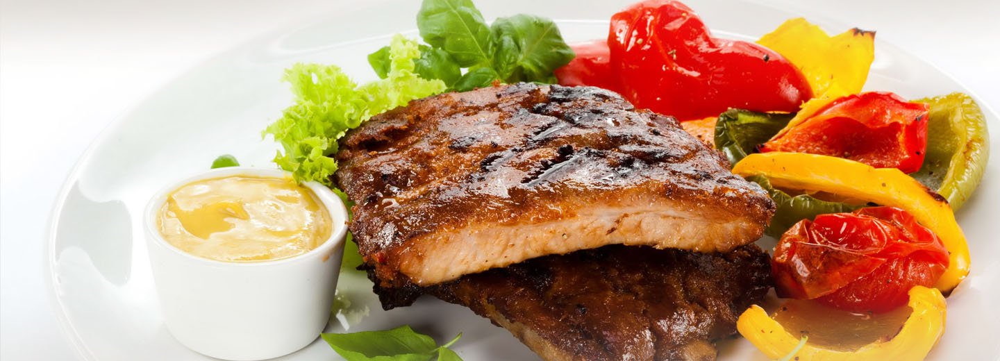

-

Taste of Goodness
-
Best Time-out
A salad is a dish consisting of mixed pieces of food, sometimes with at least one raw ingredient.
There is a strong likelihood for one or more "typical", or "traditional", breakfast menus to exist in this places.
The meal varies in size depending on the culture, and significant variations exist in different areas of the world.
the word "dinner" can have different meanings depending on culture
In addition to their basic function of satisfying thirst, drinks play important roles in human culture.
A party will typically feature food and beverages, and often music and dancing or other forms of entertainment.
Full Service Buffet. Full service buffets are seen when more services are required. We try to accommodate your special requests. Popular add-ons for full service buffets include preset-salads, breads, and desserts. The tables can be set with silverware, glasses and condiments, such as salt, pepper and lemon.